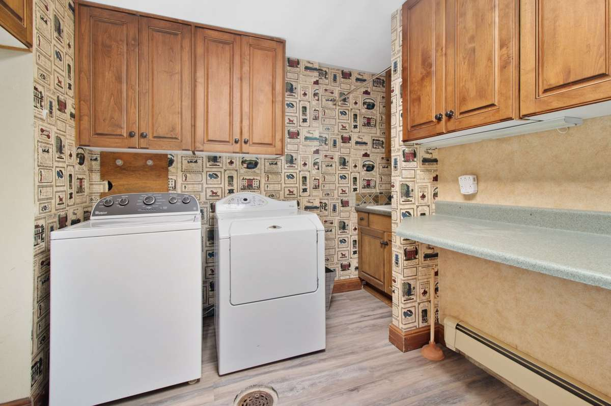

An old washer and dryer come out in one visit. Our crew unplugs both machines, shuts off and disconnects the washer's water supply hoses, pulls the dryer vent hose, and carries the pair out through the cleanest route. A gas dryer is the one exception: a licensed plumber caps the gas line first, then we take it from there.
Most laundry pairs leave a house for one of three reasons. One machine quit and the other is old enough that it makes sense to replace both. A new set is on order and the store either will not haul the old one away or charges extra to do it. Or the house is changing hands, and the buyer, seller or landlord wants the laundry room empty. The job is the same in all three cases, and it is short when the room is ready for it.
What the crew disconnects, and what it does not
We handle the simple disconnections on the spot, because they are part of getting a machine out of the room safely.
- Power. Both machines get unplugged. Most dryers use a heavy plug on a dedicated outlet, and that is still just a plug.
- Water. The washer has a hot and a cold supply hose running to valves on the wall. We turn both valves off, disconnect the hoses, and catch what drains out of them.
- The drain hose. It usually hooks into a standpipe behind the washer. We pull it and keep it with the machine.
- The dryer vent. The flexible duct between the dryer and the wall comes off. If it is crushed, torn or packed with lint, it goes out with the dryer.
What we do not do is touch a gas line or open up house wiring. A gas dryer has a supply line and a shutoff valve behind it, and that line needs a licensed plumber to cap it before the dryer moves. A machine that is hardwired rather than plugged in needs an electrician first. This is the same line we hold on every appliance, from the water heater in a utility closet to a kitchen range.
Gas dryers wait for the cap. If you smell gas at any point, leave the house and call your gas utility from outside. Otherwise, have a plumber or the installer from the new set cap the line, then book the pickup. We will ask on the phone whether the dryer is gas or electric so nobody arrives to find a live line.
What to do before the pickup day
A few small things make the job faster and keep water off your floor.
- Run the washer through a short drain or spin cycle a day or two ahead so less water sits in the tub and hoses.
- Empty both drums and check behind them. Socks, coins and the occasional lost earring live back there.
- Clear the path. Laundry rooms tend to sit at the end of a hallway or off the garage, and the route out usually passes the detergent shelf, the ironing board and the drying rack. Moving those first saves time.
- Pull the chemicals off the shelf. Bleach, stain removers and other cleaners stay with you. If they are old and you want them gone, Plano's household chemical collection program is one example of the free city drop-offs most of our service area offers, and the EPA's page on household hazardous waste explains why they should not go out with regular trash.
If the new set is arriving the same week, our post on getting old furniture out before a new delivery covers the timing. The short version: the day before delivery is better than the morning of.
Getting the pair out of a tight laundry room
Laundry rooms are often built around the machines that were installed first. Cabinets go up above them, a shelf goes in beside them, and a door gets hung that only just clears. The crew works out the route before lifting anything.
Front-load and top-load machines both travel upright on a dolly. Stacked units usually separate before they move: the dryer comes off the top, then each machine goes out on its own. In apartments and condos, that often means booking a service elevator, and in Dallas we handle a stacked laundry pair coming out of a high-rise unit on the building's schedule. An upstairs laundry room means a careful carry down the stairs with the floors protected.
A pair that has sat in the garage for a while is usually the easiest of all. In newer neighborhoods the builder's laundry pair sometimes gets upgraded within a few years and the old machines end up by the garage door, and we can pick up a washer and dryer that has been parked in a Prosper garage in the same short visit.
Will the city take an old washer and dryer?
Often, yes, if you can get them to the curb and wait for the right day. Dallas lists stoves, washers, dryers and water heaters among accepted bulky items on its monthly brush and bulky collection. Prosper's trash and recycling page lists washing machines and dryers as acceptable bulk on the weekly service day. Other cities set their own schedules and rules, so check yours.
The city option works well when two people can move both machines out to the curb and the timing is flexible. It works less well when the laundry room is upstairs, the HOA does not allow bulky items to sit out for days, or the new set arrives sooner than the next collection date. That is where a crew earns its keep.
Where the pair goes after it leaves
Washers and dryers are mostly metal, and metal goes to recyclers. A clean, working set in good condition may go to a local donation partner instead. Habitat for Humanity's ReStore donation page explains what many ReStores accept if you would rather drop a working set off yourself. Our post on where your junk goes after pickup covers the rest.
If the old set still runs and you are only replacing it for efficiency, ENERGY STAR's page on certified clothes washers notes that the average American family washes about 300 loads of laundry a year, so an efficient machine gets plenty of use. Either way, the old one still has to leave the house.
How the job runs
Tell us what is in the laundry room, whether the dryer is gas or electric, and whether the machines are upstairs, in a closet or out in the garage. A photo helps. A crew looks at what you have and gives you a firm number before anything is loaded. The quote is the bill, and disposal is included. We are affordable and priced fair, based on how much there is to take.
If the laundry pair is one piece of a bigger job, such as a kitchen remodel with old appliances or two households becoming one, we can take it all in the same visit. Our page on appliance removal covers fridges, freezers and the rest, and our guide to appliance and electronics disposal in North Texas covers the items with special rules. Call before noon and same afternoon is typical across the northern suburbs, from Plano out to a laundry room or garage cleanout in Wylie. When you are ready, tell us about the laundry room.
Frequently asked questions
Do you disconnect the washer and dryer?
Yes, the simple part. The crew unplugs both machines, turns off and disconnects the washer's water supply hoses, pulls the drain hose and takes off the dryer vent. A gas line needs a licensed plumber to cap it first, and a hardwired machine needs an electrician.
Can you take a gas dryer?
Yes, once the gas line is capped. Have a plumber or the installer for the new set cap it, then book the pickup. We do not disconnect gas lines.
Will you take a stacked washer and dryer?
Yes. Stacked units usually separate before they move, and each machine goes out on its own. In apartment buildings, let us know if a service elevator has to be reserved.
Do I need to drain the washer first?
It helps. A short drain or spin cycle a day or two ahead leaves less water in the tub and hoses. The crew still catches what comes out of the hoses when they are disconnected.
Can you take the laundry room shelving and the old drying rack too?
Yes. Wire shelving, a freestanding cabinet, the ironing board and the drying rack can all go in the same visit. Cleaning products and other chemicals stay behind for your city's collection program.
Once the gas line is capped and the path is clear, the old pair is usually out of the house before the new one arrives.